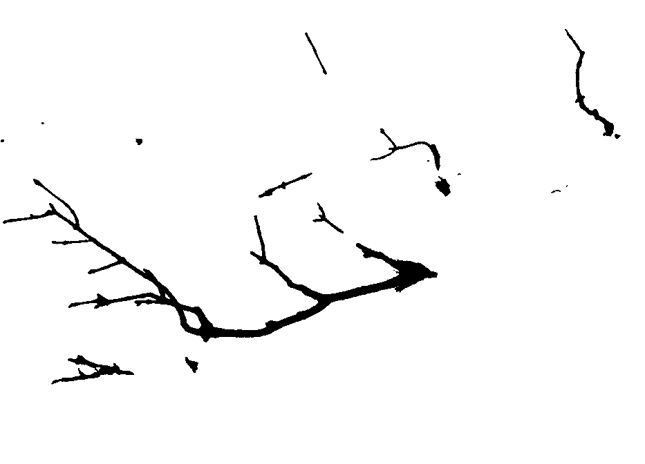

About
Fantômes is a collaborative ghost story zine, bringing together story-telling, poetry, folklore, illustration and photography in small cobbled-together publication. It is a place to explore personal and collective ghosts, lend them a voice through summoning rituals, raw poetry or scribbled drawings and get familiar with their haunting presence.
“It’s hard to walk with ghosts on your shoulders, but when you learn to listen to what they’re saying, you realize that they’re telling the story of who you are.”- Kai Cheng Thom
